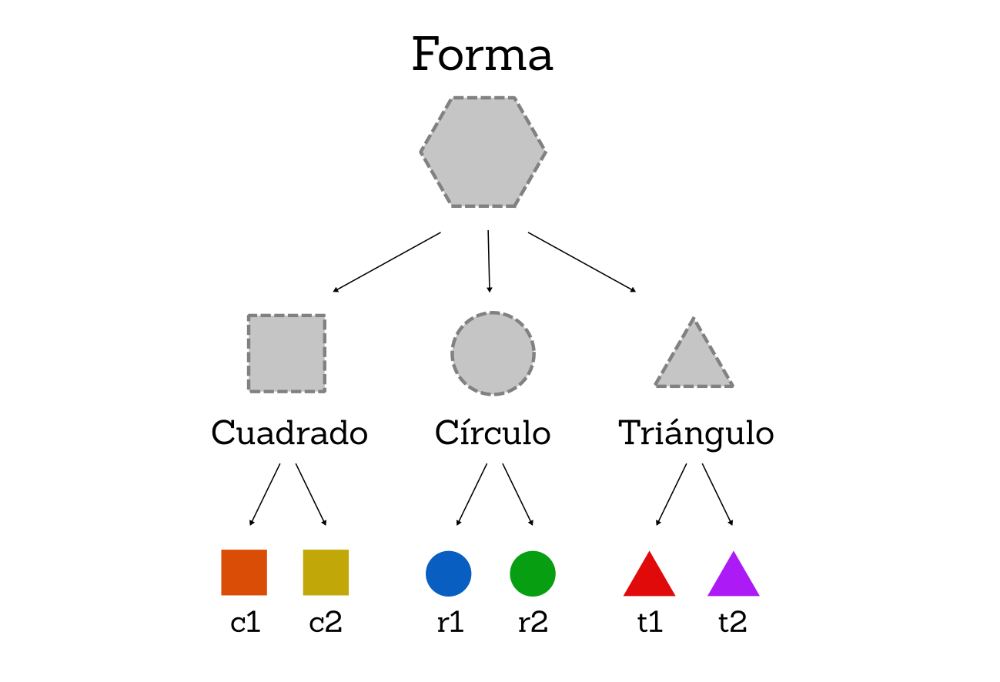

Características¶
Array functions¶
Así como tenemos un conjunto de métodos para realizar sobre variables que sean u otro conjunto de métodos para variables que sean , existe una serie de métodos que podemos utilizar sobre variables que sean de tipo . Son las llamadas array functions que veremos a continuación.
¿Qué son las Array functions?¶
Básicamente, son métodos que tiene cualquier variable que sea de tipo , y que permite realizar una operación con todos los elementos de dicho array para conseguir un objetivo concreto, dependiendo del método. En general, a dichos métodos se les pasa por parámetro una función callback y unos parámetros opcionales.
Estas son las Array functions que podemos encontrarnos en Javascript:
| Método | Descripción |
|---|---|
.forEach(cb, arg) |
Realiza la operación definida en cb por cada elemento del array. |
.every(cb, arg) |
Comprueba si todos los elementos del array cumplen la condición de cb. |
.some(cb, arg) |
Comprueba si al menos un elem. del array cumple la condición de cb. |
.map(cb, arg) |
Construye un array con lo que devuelve cb por cada elemento del array. |
.filter(cb, arg) |
Construye un array con los elementos que cumplen el filtro de cb. |
.findIndex(cb, arg) |
Devuelve la posición del elemento que cumple la condición de cb. |
.find(cb, arg) |
Devuelve el elemento que cumple la condición de cb. |
.reduce(cb, arg) |
Ejecuta cb con cada elemento (de izq a der), acumulando el resultado. |
.reduceRight(cb, arg) |
Idem al anterior, pero en orden de derecha a izquierda. |
A grandes rasgos, a cada uno de estos métodos se les pasa una función callback que se ejecutará por cada uno de los elementos que contiene el array. Empecemos por forEach(), que es quizás el más sencillo de todos.
forEach (Cada uno)¶
Como se puede ver, el método forEach() no devuelve nada y espera que se le pase por parámetro una que se ejecutará por cada elemento del array. Esa función, puede ser pasada en cualquiera de los formatos que hemos visto: como función tradicional o como función flecha:
const arr = ["a", "b", "c", "d"];
// Con funciones por expresión
const f = function () {
console.log("Un elemento.");
};
arr.forEach(f);
// Con funciones anónimas
arr.forEach(function () {
console.log("Un elemento.");
});
// Con funciones flecha
arr.forEach(() => console.log("Un elemento."));
Sin embargo, este ejemplo no tiene demasiada utilidad. A la callback se le pueden pasar varios parámetros opcionales:
- Si se le pasa un primer parámetro, este será el elemento del array.
- Si se le pasa un segundo parámetro, este será la posición en el array.
- Si se le pasa un tercer parámetro, este será el array en cuestión.
Veamos un ejemplo:
const arr = ["a", "b", "c", "d"];
arr.forEach((e) => console.log(e)); // Devuelve 'a' / 'b' / 'c' / 'd'
arr.forEach((e, i) => console.log(e, i)); // Devuelve 'a' 0 / 'b' 1 / 'c' 2 / 'd' 3
arr.forEach((e, i, a) => console.log(a[0])); // Devuelve 'a' / 'a' / 'a' / 'a'
En este ejemplo, he nombrado e al parámetro que hará referencia al elemento, i al parámetro que hará referencia al índice (posición del array) y a al parámetro que hará referencia al array en cuestión. Aún así, el usuario puede ponerle a estos parámetros el nombre que prefiera. Como se puede ver, realmente forEach() es otra forma de hacer un bucle (sobre un array), sin tener que recurrir a bucles tradicionales como for o while.
Como vemos en la tabla anterior, al método
forEach()se le puede pasar un segundo parámetroarg, que representa el valor que sobreescribiría a la palabra clavethisen el código dentro de la función callback. De necesitar esta funcionalidad, recuerda que no puedes utilizar las funciones flecha, ya que elthisno tiene efecto en ellas.
every (Todos)¶
El método every() permite comprobar si todos y cada uno de los elementos de un array cumplen la condición que se especifique en la callback:
const arr = ["a", "b", "c", "d"];
arr.every((e) => e.length == 1); // true
En este caso, la magia está en el callback. La condición es que la longitud de cada elemento del array sea 1. Si dicha función devuelve true, significa que cumple la condición, si devuelve false, no la cumple. Por lo tanto, si todos los elementos del array devuelven true, entonces every() devolverá true.
Si expandimos el ejemplo anterior a un código más detallado, tendríamos el siguiente ejemplo equivalente, que quizás sea más comprensible para entenderlo:
const arr = ["a", "b", "c", "d"];
// Esta función se ejecuta por cada elemento del array
const todos = function (e) {
// Si el tamaño del string es igual a 1
if (e.length == 1) return true;
else return false;
};
arr.every(todos); // Le pasamos la función callback todos() a every
some (Al menos uno)¶
De la misma forma que el método anterior sirve para comprobar si todos los elementos del array cumplen una determinada condición, con some() podemos comprobar si al menos uno de los elementos del array, cumplen dicha condición definida por el callback.
const arr = ["a", "bb", "c", "d"];
arr.some((e) => e.length == 2); // true
Observa que en este ejemplo, el método some() devuelve true porque existe al menos un elemento del array con una longitud de 2 carácteres.
map (Transformaciones)¶
El método map() es un método muy potente y útil para trabajar con arrays, puesto que su objetivo es devolver un nuevo array donde cada uno de sus elementos será lo que devuelva la función callback por cada uno de los elementos del array original:
const arr = ["Ana", "Pablo", "Pedro", "Pancracio", "Heriberto"];
const nuevoArr = arr.map((e) => e.length);
nuevoArr; // Devuelve [3, 5, 5, 9, 9]
Observa que el array devuelto por map() es nuevoArr, y cada uno de los elementos que lo componente, es el número devuelto por el callback (e.length), que no es otra cosa sino el tamaño de cada .
Este método nos permite hacer multitud de operaciones, ya que donde devolvemos e.length podriamos devolver el propio modificado o cualquier otra cosa.
filter (Filtrado)¶
El método filter() nos permite filtrar los elementos de un array y devolver un nuevo array con sólo los elementos que queramos. Para ello, utilizaremos la función callback para establecer una condición que devuelve true sólo en los elementos que nos interesen:
const arr = ["Ana", "Pablo", "Pedro", "Pancracio", "Heriberto"];
const nuevoArr = arr.filter((e) => e[0] == "P");
nuevoArr; // Devuelve ['Pablo', 'Pedro', 'Pancracio']
En este ejemplo, filtramos sólo los elementos en los que su primera letra sea P. Por lo tanto, la variable nuevoArr será un array con sólo esos elementos.
Ten en cuenta que si ningún elemento cumple la condición, filter() devuelve un vacío.
find (Búsqueda)¶
En ECMAScript 6 se introducen dos nuevos métodos dentro de las Array functions: find() y findIndex(). Ambos se utilizan para buscar elementos de un array mediante una condición, la diferencia es que el primero devuelve el elemento mientras que el segundo devuelve su posición en el array original. Veamos como funcionan:
const arr = ["Ana", "Pablo", "Pedro", "Pancracio", "Heriberto"];
arr.find((e) => e.length == 5); // 'Pablo'
arr.findIndex((e) => e.length == 5); // 1
La condición que hemos utilizado en este ejemplo es buscar el elemento que tiene 5 carácteres de longitud. Al buscarlo en el array original, el primero que encontramos es Pablo, puesto que find() devolverá 'Pablo' y findIndex() devolverá 1, que es la segunda posición del array donde se encuentra.
En el caso de no encontrar ningún elemento que cumpla la condición, find() devolverá , mientras que findIndex(), que debe devolver un , devolverá -1.
reduce (Acumuladores)¶
Por último, nos encontramos con una pareja de métodos denominados reduce() y reduceRight(). Ambos métodos se encargan de recorrer todos los elementos del array, e ir acumulando sus valores (o alguna operación diferente) y sumarlo todo, para devolver su resultado final.
En este par de métodos, encontraremos una primera diferencia en su función callback, puesto que en lugar de tener los clásicos parámetros opcionales (e, i, a) que hemos utilizado hasta ahora, tiene (p, e, i, a), donde vemos que aparece un primer parámetro extra inicial: p.
En la primera iteración, p contiene el valor del primer elemento del array y e del segundo. En siguientes iteraciones, p es el acumulador que contiene lo que devolvió el callback en la iteración anterior, mientras que e es el siguiente elemento del array, y así sucesivamente. Veamos un ejemplo para entenderlo:
const arr = [95, 5, 25, 10, 25];
arr.reduce((p, e) => {
console.log(`P=${p} e=${e}`);
return p + e;
});
// P=95 e=5 (1ª iteración: elemento 1: 95 + elemento 2: 5) = 100
// P=100 e=25 (2ª iteración: 100 + elemento 3: 25) = 125
// P=125 e=10 (3ª iteración: 125 + elemento 4: 10) = 135
// P=135 e=25 (4ª iteración: 135 + elemento 5: 25) = 160
// Finalmente, devuelve 160
Gracias a esto, podemos utilizar el método reduce() como acumulador de elementos de izquierda a derecha y reduceRight() como acumulador de elementos de derecha a izquierda. Veamos un ejemplo de cada uno, realizando una resta en lugar de una suma:
const arr = [95, 5, 25, 10, 25];
arr.reduce((p, e) => p - e); // 95 - 5 - 25 - 10 - 25. Devuelve 30
arr.reduceRight((p, e) => p - e); // 25 - 10 - 25 - 5 - 95. Devuelve -110
Recuerda que en cualquiera de estas array functions puedes realizar operaciones o condiciones tanto con el parámetro
e(elemento), como con el parámetroi(índice o posición) o con el parámetroa(array).
Iteradores¶
En ECMAScript 6 se introducen unos métodos muy útiles para utilizar como iteradores (objetos preparados para recorrer los elementos de un array y devolver información). Hablamos de los métodos keys(), values() y entries(). El primero de ellos permite avanzar en un array, mientras va devolviendo las posiciones, el segundo los valores (el elemento en sí) y el tercero devuelve un array con la posición en el primer elemento y el valor en el segundo elemento.
| Método | Descripción |
|---|---|
i .keys() |
Permite iterar un array e ir devolviendo sus índices o posiciones (keys). |
i .values() |
Permite iterar un array e ir devolviendo sus valores (elementos). |
i .entries() |
Permite iterar un array e ir devolviendo un array [índice, valor]. |
Estos métodos, combinados con un for...of por ejemplo, permiten recorrer los arrays y obtener diferente información del array rápidamente. En el siguiente ejemplo utilizamos una característica avanzada que veremos más adelante llamada desestructuración:
const arr = ["Sonic", "Mario", "Luigi"];
// Obtiene un array con las keys (posiciones)
const keys = [...arr.keys()]; // [0, 1, 2]
// Obtiene un array con los valores (elementos)
const values = [...arr.values()]; // ['Sonic', 'Mario', 'Luigi']
// Obtiene un array con las entradas (par key, valor)
const entries = [...arr.entries()]; // [[0, 'Sonic'], [1, 'Mario'], [2, 'Luigi']]
Expresiones regulares (RegExp)¶
En muchas ocasiones nos encontraremos en la situación de querer realizar una o varias acciones si se cumple un determinado caso. Pero muchas veces, esos casos no son tan simples, sino que existe un número muy alto de situaciones diferentes que no podemos cubrir de formas tradicionales. En esas situaciones es donde las expresiones regulares quizás nos puedan ser de ayuda.
¿Qué es una RegExp?¶
Las expresiones regulares (a menudo llamadas RegExp o RegEx) son un sistema para buscar, capturar o reemplazar texto utilizando patrones. Estos patrones permiten realizar una búsqueda de texto de una forma relativamente sencilla y abstracta, de forma que abarca una gran cantidad de posibilidades que de otra forma sería imposible o muy costosa.
| Constructor | Descripción |
|---|---|
new RegExp(r, flags) |
Crea una nueva expresión regular a partir de r con los flags indicados. |
/r/flags |
Simplemente, la expresión regular r entre barras /. Notación preferida. |
Así pues, podríamos crear expresiones regulares de estas dos formas, siempre teniendo como notación preferida la primera:
// Notación literal (preferida)
const r = /.a.o/i;
// Notación de objeto
const r = new RegExp(".a.o", "i");
const r = new RegExp(/.a.o/, "i");
En ambos ejemplos, estamos estableciendo la expresión regular .a.o, donde el punto (como veremos más adelante) es un comodín que simboliza cualquier carácter, y la i es un flag que establece que no diferencia mayúsculas de minúsculas.
En Javascript, se prefiere utilizar las barras
/para delimitar una expresión regular en una variable. Se trata de una forma más cómoda y compacta que evita tener que hacer unnewdel objeto .
Propiedades de una RegExp¶
Cada expresión regular creada, tiene unas propiedades definidas, donde podemos consultar ciertas características de la expresión regular en cuestión. Además, también tiene unas propiedades de comprobación para saber si un flag determinado está activo o no:
| Propiedades | Descripción |
|---|---|
.source |
Devuelve un string con la expresión regular original al crear el objeto (sin flags). |
.flags |
Devuelve un string con los flags activados en la expresión regular. |
.lastIndex |
Devuelve la posición donde se encontró una ocurrencia en la última búsqueda. |
.global |
Comprueba si el flag g está activo en la expresión regular. |
.ignoreCase |
Comprueba si el flag i está activo en la expresión regular. |
.multiline |
Comprueba si el flag m está activo en la expresión regular. |
.unicode |
Comprueba si el flag u está activo en la expresión regular. |
.sticky |
Comprueba si el flag y está activo en la expresión regular. |
El funcionamiento de los flags los veremos en el apartado siguiente. No obstante, con las propiedades .source y .flags se puede obtener casi toda la información que se puede hacer con dichos flags.
const r = /reg/gi;
r.source; // 'reg'
r.flags; // 'ig'
r.flags.includes("g"); // true (equivalente a r.global)
r.flags.includes("u"); // false (equivalente a r.unicode)
También podemos comprobar si un flag está activo con la propiedad .flags combinada con includes(), como se puede ver en el ejemplo anterior. Por otro lado, .source nos devuelve un con la expresión regular definida (y sin flags). La utilidad de lastIndex() la veremos más adelante.
Flags de una RegExp¶
El segundo parámetro del new RegExp() o el que se escribe después de la segunda barra / delimitadora del literal de las expresiones regulares, son una serie de carácteres que indican los flags activos en la expresión regular en cuestión:
const r1 = /reg/;
const r2 = /reg/i;
const r3 = /reg/gi;
La expresión regular r1 no tiene ningún flag activado, mientras que r2 tiene el flag i activado y r3 tiene el flag i y el flag g activado. Veamos para que sirve cada flag:
| Flag | Booleano | Descripción |
|---|---|---|
i |
.ignoreCase |
Ignora mayúsculas y minúsculas. Se suele denominar insensible a mayús/minús. |
g |
.global |
Búsqueda global. Sigue buscando coincidencias en lugar de pararse al encontrar una. |
m |
.multiline |
Multilínea. Permite a ^ y $ tratar los finales de línea \r o \n. |
u |
.unicode |
Unicode. Interpreta el patrón como un código de una secuencia Unicode. |
y |
.sticky |
Sticky. Busca sólo desde la posición indicada por lastIndex. |
Cada una de estas flags se pueden comprobar si están activas desde Javascript con su booleano asociado, que es una propiedad de la expresión regular:
const r = /reg/gi;
r.global; // true
r.ignoreCase; // true
r.multiline; // false
r.sticky; // false
r.unicode; // false
Métodos de RegExp¶
Los objetos RegExp tienen varios métodos para utilizar expresiones regulares contra textos y saber si «casan» o no, es decir, si el patrón de la expresión regular encaja con el texto propuesto.
| Método | Descripción |
|---|---|
test(str) |
Comprueba si la expresión regular «casa» con el texto str pasado por parámetro. |
exec(str) |
Ejecuta una búsqueda de patrón en el texto str. Devuelve un array con las capturas. |
Por ejemplo, veamos como utilizar la expresión regular del ejemplo anterior con el método test() para comprobar si encaja con un texto determinado:
const r = /.a.o/i;
r.test("gato"); // true
r.test("pato"); // true
r.test("perro"); // false
r.test("DATO"); // true (el flag i permite mayús/minús)
El método exec() lo veremos un poco más adelante en el apartado de captura de patrones, ya que es algo más complejo. Primero debemos aprender que carácteres especiales existen en las expresiones regulares para dominarlas.
Carácteres especiales¶
Antes de comenzar a utilizar expresiones regulares hay que aprender la parte más compleja de ellas: los carácteres especiales. Dentro de las expresiones regulares, existen ciertos carácteres que tienen un significado especial, y también, muchos de ellos dependen de donde se encuentren para tener ese significado especial, por lo que hay que aprender bien como funcionan.
Clases básicas¶
Empecemos con algunos de los más sencillos:
| Caracter especial | Descripción |
|---|---|
. |
Comodín, cualquier caracter. |
\ |
Invierte el significado de un carácter. Si es especial, lo escapa. Si no, lo vuelve especial. |
\t |
Caracter especial. Tabulador. |
\r |
Caracter especial. Retorno de carro. A menudo denominado CR. |
\n |
Caracter especial. Nueva línea. A menudo denominado «line feed» o LF. |
En esta pequeña tabla vemos algunos caracteres especiales que podemos usar en expresiones regulares. Observa que al igual que con otros tipos de datos, podemos utilizar el método test() sobre el literal de la expresión regular, sin necesidad de guardarla en una variable previamente:
// Buscamos RegExp que encaje con "Manz"
/M.nz/.test("Manz"); // true
/M.nz/.test("manz"); // false (La «M» debe ser mayúscula)
/M.nz/i.test("manz"); // true (Ignoramos mayús/minús con el flag «i»)
// Buscamos RegExp que encaje con "A."
/A./.test("A."); // true (Ojo, nos da true, pero el punto es comodín)
/A./.test("Ab"); // true (Nos da true con cualquier cosa)
/A\./.test("A."); // true (Solución correcta)
/A\./.test("Ab"); // false (Ahora no deja pasar algo que no sea punto)
Conjunto de carácteres o alternativas¶
Dentro de las expresiones regulares los corchetes [] tienen un significado especial. Se trata de un mecanismo para englobar un conjunto de carácteres personalizado. Por otro lado, si incluimos un circunflejo ^ antes de los carácteres del corchete, invertimos el significado, pasando a ser que no exista el conjunto de carácteres personalizado:
| Caracter especial | Descripción |
|---|---|
[] |
Rango de carácteres. Cualquiera de los caracteres del interior de los corchetes. |
[^] |
No exista cualquiera de los caracteres del interior de los corchetes. |
| |
Establece una alternativa: lo que está a la izquierda o lo que está a la derecha. |
Por último, tenemos el «pipe» |, con el que podemos establecer alternativas. Veamos un ejemplo aplicado a esto, que se verá más claro:
const r = /[aeiou]/i; // RegExp que acepta vocales (mayús/minús)
r.test("a"); // true (es vocal)
r.test("E"); // true (es vocal, y tiene flag «i»)
r.test("t"); // false (no es vocal)
const r = /[^aeiou]/i; // RegExp que acepta lo que no sea vocal (mayús/minús)
r.test("a"); // false
r.test("E"); // false
r.test("T"); // true
r.test("m"); // true
const r = /casa|cama/; // RegExp que acepta la primera o la segunda opción
r.test("casa"); // true
r.test("cama"); // true
r.test("capa"); // false
En el interior de los corchetes, si establecemos dos carácteres separados por guión, por ejemplo [0-9], se entiende que indicamos el rango de carácteres entre 0 y 9, sin tener que escribirlos todos explícitamente.
De esta forma podemos crear rangos como [A-Z] (mayúsculas) o [a-z] (minúsculas), o incluso varios rangos específicos como [A-Za-z0-9]:
| Caracter especial | Alternativa | Descripción |
|---|---|---|
[0-9] |
\d |
Un dígito del 0 al 9. |
[^0-9] |
\D |
No exista un dígito del 0 al 9. |
[A-Z] |
Letra mayúscula de la A a la Z. Excluye ñ o letras acentuadas. |
|
[a-z] |
Letra minúscula de la a a la z. Excluye ñ o letras acentuadas. |
|
[A-Za-z0-9] |
\w |
Carácter alfanumérico (letra mayúscula, minúscula o dígito). |
[^A-Za-z0-9] |
\W |
No exista carácter alfanumérico (letra mayúscula, minúscula o dígito). |
[ \t\r\n\f] |
\s |
Carácter de espacio en blanco (espacio, TAB, CR, LF o FF). |
[^ \t\r\n\f] |
\S |
No exista carácter de espacio en blanco (espacio, TAB, CR, LF o FF). |
\xN |
Carácter hexadecimal número N. |
|
\uN |
Carácter Unicode número N. |
Observa que en esta tabla tenemos una notación alternativa que es equivalente al caracter especial indicado. Por ejemplo, es lo mismo escribir [0-9] que \d. Algunos programadores encuentran más explicativa la primera forma y otros más cómoda la segunda.
Anclas¶
Dentro de las expresiones regulares, las anclas son un recurso muy importante, ya que permiten deliminar los patrones de búsqueda e indicar si empiezan o terminan por carácteres concretos, siendo mucho más específicos al realizar la búsqueda:
| Caracter especial | Descripción |
|---|---|
^ |
Ancla. Delimina el inicio del patrón. Significa empieza por. |
$ |
Ancla. Delimina el final del patrón. Significa acaba en. |
\b |
Posición de una palabra limitada por espacios, puntuación o inicio/final. |
\B |
Opuesta al anterior. Posición entre 2 caracteres alfanuméricos o no alfanuméricos. |
Las dos primeras son bastante útiles cuando sabemos que el texto que estamos buscando termina o empieza de una forma concreta. De este modo podemos hacer cosas como las siguientes:
const r = /^mas/i;
r.test("Formas"); // false (no empieza por "mas")
r.test("Master"); // true
r.test("Masticar"); // true
const r = /do$/i;
r.test("Vívido"); // true
r.test("Dominó"); // false
Por otro lado, \b nos permite indicar si el texto adyacente está seguido o precedido de un límite de palabra (espacio), puntuación (comas o puntos) o inicio o final del :
const r = /fo\b/;
r.test("Esto es un párrafo de texto."); // true (tras "fo" hay un límite de palabra)
r.test("Esto es un párrafo."); // true (tras "fo" hay un signo de puntuación)
r.test("Un círculo es una forma."); // false (tras "fo" sigue la palabra)
r.test("Frase que termina en fo"); // true (tras "fo" termina el string)
Por último, \B es la operación opuesta a \b, por lo que podemos utilizarla cuando nos interesa que el texto no esté delimitado por una palabra, puntuación o string en sí.
Cuantificadores¶
En las expresiones regulares los cuantificadores permiten indicar cuántas veces se puede repetir el carácter inmediatamente anterior. Existen varios tipos de cuantificadores:
| Caracter especial | Descripción |
|---|---|
* |
El carácter anterior puede aparecer 0 o más veces. |
+ |
El carácter anterior puede aparecer 1 o más veces. |
? |
El carácter anterior puede aparecer o no aparecer. |
{n} |
El carácter anterior aparece n veces. |
{n,} |
El carácter anterior aparece n o más veces. |
{n,m} |
El carácter anterior aparece de n a m veces. |
Veamos algunos ejemplos para aprender a aplicarlos. Comencemos con * (0 o más veces):
// 'a' aparece 0 o más veces en el string
const r = /a*/;
r.test(""); // true ('a' aparece 0 veces)
r.test("a"); // true ('a' aparece 1 veces)
r.test("aa"); // true ('a' aparece 2 veces)
r.test("aba"); // true ('a' aparece 2 veces)
r.test("bbb"); // true ('a' aparece 0 veces)
El cuantificador + es muy parecido a *, sólo que con el primero es necesario que el carácter anterior aparezca al menos una vez:
// 'a' aparece 1 o más veces (equivalente a /aa*/)
const r = /a+/;
r.test(""); // false ('a' aparece 0 veces)
r.test("a"); // true ('a' aparece 1 veces)
r.test("aa"); // true ('a' aparece 2 veces)
r.test("aba"); // true ('a' aparece 2 veces)
r.test("bbb"); // false ('a' aparece 0 veces)
El cuantificador ? se suele utilizar para indicar que el carácter anterior es opcional (puede aparecer o puede no aparecer). Normalmente se utiliza cuando quieres indicar que no importa que aparezca un carácter opcional:
const r = /disparos?/i;
r.test("Escuché disparos en la habitación."); // true
r.test("Efectuó un disparo al sujeto."); // true
r.test("La pistola era de agua."); // false
Los tres cuantificadores siguientes, se utilizan cuando necesitamos concretar más el número de repeticiones del caracter anterior. Por ejemplo, {n} indica un número exacto, {n,} indica al menos n veces y {n,m} establece que se repita de n a m veces.
// Un número formado de 2 dígitos (del 0 al 9)
const r = /[0-9]{2}/;
r.test(42); // true
r.test(88); // true
r.test(1); // false
r.test(100); // true
Observa que el último aparece como true. Esto ocurre porque en la expresión regular no se han establecido anclas que delimiten el inicio y/o el final del texto. Si las añadimos, es más estricto con las comprobaciones:
const r = /^[0-9]{2}$/;
r.test(4); // false
r.test(55); // true
r.test(100); // false
const r = /^[0-9]{3,}$/;
r.test(33); // false
r.test(4923); // true
const r = /^[0-9]{2,5}$/;
r.test(2); // false
r.test(444); // true
r.test(543213); // false
Si quieres profundizar con las expresiones regulares, puedes jugar a RegEx People, un pequeño y básico juego para aprender a utilizar las expresiones regulares y buscar patrones, con su código fuente disponible en GitHub.
Recuerda también que aunque
test()espera un por parámetro, en caso de enviarle otro objeto, lo pasará a mediante el métodotoString()que existe en todos los objetos de Javascript
Captura de patrones¶
Pero con las expresiones regulares no sólo podemos realizar búsquedas de patrones. Una de las características más importantes de las expresiones regulares es lo potente y versátil que resultan las capturas de patrones.
Toda expresión regular que utilice la parentización (englobe con paréntesis fragmentos de texto) está realizando implícitamente una captura de texto, que es muy útil para obtener rápidamente información.
Para ello, dejamos de utilizar el método test(str) y comenzamos a utilizar exec(str), que funciona exactamente igual, sólo que devuelve un array con las capturas realizadas. Antes de empezar a utilizarlo, necesitamos saber detalles sobre la parentización:
| Caracter especial | Descripción |
|---|---|
(x) |
El patrón incluído dentro de paréntesis se captura y se guarda en $1 o sucesivos. |
(?:x) |
Si incluímos ?: al inicio del contenido de los paréntesis, evitamos capturar ese patrón. |
x(?=y) |
Busca sólo si x está seguido de y. |
x(?!y) |
Busca sólo si x no está seguido de y. |
Así pues, vamos a realizar una captura a través de los paréntesis de una expresión regular:
// RegExp que captura palabras de 3 letras.
const r = /\b([a-z]{3})\b/gi;
const str = "Hola a todos, amigos míos. Esto es una prueba que permitirá ver que ocurre.";
r.global; // true (el flag global está activado)
r.exec(str); // ['una', 'una'] index: 35
r.exec(str); // ['que', 'que'] index: 46
r.exec(str); // ['ver', 'ver'] index: 60
r.exec(str); // ['que', 'que'] index: 64
r.exec(str); // null
El método exec() nos permite ejecutar una búsqueda sobre el texto str hasta encontrar una coincidencia. En ese caso, se detiene la búsqueda y nos devuelve un array con los capturados por la parentización. Si el flag g está activado, podemos volver a ejecutar exec() para continuar buscando la siguiente aparición, hasta que no encuentre ninguna más, que devolverá null.
RegEx en Strings¶
Quizás, generalmente el usuario prefiera utilizar el método match(reg) de los , que permiten ejecutar la búsqueda de la expresión regular reg pasada por parámetro, sobre esa variable de texto. El resultado es que nos devuelve un con los capturados:
const r = /\b([a-z]{3})\b/gi;
const str = "Hola a todos, amigos míos. Esto es una prueba que permitirá ver que ocurre.";
str.match(r); // Devuelve ['una', 'que', 'ver', 'que']
const r = /\bv([0-9]+)\.([0-9]+)\.([0-9]+)\b/;
const str = "v1.0.21";
str.match(r); // Devuelve ['v1.0.21', '1', '0', '21']
En el caso de no existir parentización, el array devuelto contiene un con todo el texto capturado. En el caso de existir múltiples parentizaciones (como en el último ejemplo), el array devuelto contiene un con todo el texto capturado, y un por cada parentización.
Recuerda que los tienen varios métodos que permiten el uso de expresiones regulares para realizar operaciones, como por ejemplo, el replace(), para hacer reemplazos en todas las ocurrencias:
const daenerys = "Javascript es un gran lenguaje";
daenerys.replace(/[aeou]/g, "i"); // 'Jiviscript is in grin lingiiji'
JSON¶
Cuando trabajamos con mucha cantidad de información, se puede volver necesario aislar el código de programación de los datos. De esta forma, podemos guardar información en un fichero independiente, separado del archivo donde tenemos el código de nuestro programa. Así, si necesitamos actualizar o modificar datos, no tenemos que tocar el código de nuestro programa.
¿Qué es JSON?¶
JSON son las siglas de JavaScript Object Notation, y no es más que un formato ligero de datos, con una estructura (notación) específica, que es totalmente compatible de forma nativa con Javascript. Como su propio nombre indica, JSON se basa en la sintaxis que tiene Javascript para crear objetos.
Un archivo JSON mínimo debe tener la siguiente sintaxis:
{
}
Esto simplemente es un objeto vacío. Un archivo JSON, puede contener varios tipos de datos:
{
"name": "Manz",
"life": 99,
"dead": false,
"props": ["invisibility", "coding", "happymood"],
"senses": {
"vision": 50,
"audition": 75,
"taste": 40,
"smell": 50,
"touch": 80
}
}
Como se puede ver, en JSON todos los textos deben estar entrecomillados con «comillas dobles», y solo se pueden utilizar tipos de datos como , , , , o null. Un valor null, simplemente, también sería un JSON válido.
OJO: JSON no permite utilizar tipos de datos como , , o valores
undefined. Tampoco es válido incluir comentarios en un JSON.
Mucho cuidado con las comillas mal cerradas o las comas sobrantes (antes de un cierre de llaves, por ejemplo). Suelen ser motivos de error de sintaxis frecuentemente. Si tienes dudas sobre si la sintaxis del JSON que has construído es correcta, puedes utilizar JSONLint, una página que te permitirá pegar el código JSON y validarlo para saber si es correcto. También nos puede servir para indentar correctamente el JSON.
¿Cómo utilizar JSON?¶
Si analizamos bien la sintaxis de un JSON, nos daremos cuenta que es muy similar a algo a lo que ya deberíamos estar acostumbrados:
const o = {
name: "Manz",
life: 99,
};
Simplemente añadiendo const o = al principio, nos daremos cuenta (si no era evidente ya) de que se trata de un objeto de Javascript y que no debería ser muy sencillo pasar de JSON a Javascript y viceversa.
En Javascript tenemos una serie de métodos que nos facilitan esa tarea, pudiendo trabajar con que contengan JSON y objetos Javascript de forma indiferente:
| Método | Descripción |
|---|---|
JSON.parse(str) |
Convierte el texto str (un JSON válido) a un objeto y lo devuelve. |
JSON.stringify(obj) |
Convierte un objeto Javascript obj a su representación JSON y la devuelve. |
Convertir JSON a Objeto¶
La acción de convertir JSON a objeto Javascript se le suele denominar parsear. Es una acción que analiza un que contiene un JSON válido y devuelve un objeto Javascript con dicha información correctamente estructurada. Para ello, utilizaremos el método JSON.parse():
const str = '{ "name": "Manz", "life": 99 }';
const obj = JSON.parse(str);
obj.name; // 'Manz'
obj.life; // 99
Como se puede ver, obj es un objeto generado a partir del JSON recogido en la variable str y podemos consultar sus propiedades y trabajar con ellas sin problemas.
Convertir Objeto a JSON¶
La acción inversa, convertir un objeto Javascript a JSON también se puede realizar facilmente haciendo uso del método JSON.stringify(). Este método dificil de pronunciar viene a ser algo así como «convertir a texto», y lo podemos utilizar para transformar un objeto de Javascript a JSON rápidamente:
const obj = {
name: "Manz",
life: 99,
saludar: function () {
return "Hola!";
},
};
const str = JSON.stringify(obj);
str; // '{"name":"Manz","life":99}'
Observa que, como habíamos dicho, las funciones no están soportadas por JSON, por lo que si intentamos convertir un objeto que contiene métodos o funciones, JSON.stringify() no fallará, pero simplemente devolverá un omitiendo las propiedades que contengan funciones.
Leyendo JSON externo¶
Teniendo en cuenta todo lo visto hasta ahora, JSON es un formato ideal para guardar en pequeños archivos de texto que se puedan leer desde Javascript, pasar a objetos y trabajar con ellos. Para hacer esto, existen varias estrategias. La más común es utilizar AJAX para leer este tipo de datos, pero eso lo veremos más adelante.
Recursos para JSON¶
Existen varios recursos interesantes para trabajar con JSON y que pueden sernos de utilidad como programadores. Cito varios de ellos a continuación:
| Nombre | Descripción | GitHub |
|---|---|---|
| JSONLint | Validador JSON. Comprueba sintaxis e indica errores. | - |
| JSONLint | Validador JSON. También disponible versión de terminal (CLI). | @zaach/jsonlint |
| prettyjson | Lector de JSON para terminal (CLI) con resaltado en colores. | @rafeca/prettyjson |
| JSONEditor | Editor JSON visual y online. | @josdejong/jsoneditor |
| JSONSelect | Selector de datos JSON al estilo CSS. Experimental. | @lloyd/JSONSelect |
Clases ES6¶
Una vez dominamos las bases de la programación y nuestro código va creciendo cada vez más, comprobaremos que las funciones no suelen ser suficiente como para organizar nuestro código y los mecanismos que tenemos a nuestro alcance quizás no resultan todo lo prácticos que deberían ser.
Aunque Javascript no soporta clases de forma nativa, en ECMAScript 2015 se introduce la posibilidad de usar clases como en otros lenguajes, aunque internamente Javascript traduce estas clases al sistema basado en prototipos que usa en realidad. Para los programadores funciona a modo de azúcar sintáctico, es decir, sólo «endulza» la forma de trabajar para que sea más agradable para nosotros.
¿Qué es una clase?¶
Una clase es una forma de organizar código de forma entendible con el objetivo de simplificar el funcionamiento de nuestro programa. Además, hay que tener en cuenta que las clases son «conceptos abstractos» de los que se pueden crear objetos de programación, cada uno con sus características concretas.
Esto puede ser complicado de entender con palabras, pero se ve muy claro con ejemplos:
En primer lugar tenemos la clase. La clase es el concepto abstracto de un objeto, mientras que el objeto es el elemento final que se basa en la clase. En la imagen anterior tenemos varios ejemplos:
-
En el primer ejemplo tenemos dos variables:
patoylucas. Ambos son animales, por lo que son objetos que están basados en la claseAnimal. Tantopatocomolucastienen las características que estarán definidas en la claseAnimal: color, sonido que emiten, nombre, etc... -
En el segundo ejemplo tenemos dos variables
seatyopel. Se trata de dos coches, que son vehículos, puesto que están basados en la claseVehículo. Cada uno tendrá las características de su clase: color del vehículo, número de ruedas, marca, modelo, etc... -
En el tercer ejemplo tenemos dos variables
cuadradoyc2. Se trata de dos formas geométricas, que al igual que los ejemplos anteriores tendrán sus propias características, como por ejemplo el tamaño de sus lados. El elementocuadradopuede tener un lado de3cm y el elementoc2puede tener un lado de6cm.
En Javascript se utiliza una sintaxis muy similar a otros lenguajes como, por ejemplo, Java. Declarar una clase es tan sencillo como escribir lo siguiente:
// Declaración de una clase
class Animal {}
// Crear o instanciar un objeto
const pato = new Animal();
El nombre elegido debería hacer referencia a la información que va a contener dicha clase. Piensa que el objetivo de las clases es almacenar en ella todo lo que tenga relación (en este ejemplo, con los animales). Si te fijas, es lo que venimos haciendo hasta ahora con objetos como , , u otros.
Observa que luego creamos una variable donde hacemos un new Animal(). Estamos creando una variable pato (un objeto) que es de tipo Animal, y que contendrá todas las características definidas dentro de la clase Animal (de momento, vacía).
Una norma de estilo en el mundo de la programación es que las clases deben siempre empezar en mayúsculas. Esto nos ayudará a diferenciarlas sólo con leerlas. Si te interesa este tema, puedes echar un vistazo al tema de las convenciones de nombres en programación.
Elementos de una clase¶
Una clase tiene diferentes **características que la forman, vamos a ir explicándolas todas detalladamente. Pero primero, una tabla general para verlas en conjunto:
| Elemento | Descripción |
|---|---|
| Propiedad | Variable que existe dentro de una clase. Puede ser pública o privada. |
Propiedad pública |
Propiedad a la que se puede acceder desde fuera de la clase. |
Propiedad privada |
Propiedad a la que no se puede acceder desde fuera de la clase. |
Propiedad computada |
Función para acceder a una propiedad con modificaciones (getter/setter). |
| Método | Función que existe dentro de una clase. Puede ser pública o privada. |
Método público |
Método que se puede ejecutar desde dentro y fuera de la clase. |
Método privado |
Método que sólo se puede ejecutar desde dentro de la clase. |
Método estático |
Método que se ejecuta directamente desde la clase, no desde la instancia. |
Constructor |
Método que se ejecuta automáticamente cuando se crea una instancia. |
Como vemos, todos estas características se dividen en dos grupos: las propiedades (a grandes rasgos, variables dentro de clases) y los métodos (a grandes rasgos, funciones dentro de clases). Veamos cada una de ellas en detalle, pero empecemos por los métodos.
¿Qué es un método?¶
Hasta ahora habíamos visto que los métodos eran funciones que viven dentro de una variable, más concretamente de un objeto. Los objetos de tipo tienen varios métodos, los objetos de tipo tiene otros métodos, etc... Justo eso es lo que definimos en el interior de una clase.
Si añadimos un método a la clase Animal, al crear cualquier variable haciendo un new Animal(), tendrá automáticamente ese método disponible. Ten en cuenta que podemos crear varias variables de tipo Animal y serán totalmente independientes cada una:
// Declaración de clase
class Animal {
// Métodos
hablar() {
return "Cuak";
}
}
// Creación de una instancia u objeto
const pato = new Animal();
pato.hablar(); // 'Cuak'
const donald = new Animal();
donald.hablar(); // 'Cuak'
Observa que el método hablar(), que se encuentra dentro de la clase Animal, existe en las variables pato y donald porque realmente son de tipo Animal. Al igual que con las funciones, se le pueden pasar varios parámetros al método y trabajar con ellos como venimos haciendo normalmente con las funciones.
¿Qué es un método estático?¶
En el caso anterior, para usar un método de una clase, como por ejemplo hablar(), debemos crear el objeto basado en la clase haciendo un new de la clase. Lo que se denomina crear un objeto o una instancia de la clase. En algunos casos, nos puede interesar crear métodos estáticos en una clase porque para utilizarlos no hace falta crear ese objeto, sino que se pueden ejecutar directamente sobre la clase directamente:
class Animal {
static despedirse() {
return "Adiós";
}
hablar() {
return "Cuak";
}
}
Animal.despedirse(); // 'Adiós'
Como veremos más adelante, lo habitual suele ser utilizar métodos normales (no estáticos), porque normalmente nos suele interesar crear varios objetos y guardar información diferente en cada uno de ellos, y para eso tendríamos que instanciar un objeto.
Una de las limitaciones de los métodos estáticos es que en su interior sólo podremos hacer referencia a elementos que también sean estáticos. No podremos acceder a propiedades o métodos no estáticos, ya que necesitaríamos instanciar un objeto para hacerlo.
Los métodos estáticos se suelen utilizar para crear funciones de apoyo que realicen tareas concretas o genéricas, porque están relacionadas con la clase en general.
¿Qué es un constructor?¶
Se le llama constructor a un tipo especial de método de una clase, que se ejecuta automáticamente a la hora de hacer un new de dicha clase. Una clase solo puede tener un constructor, y en el caso de que no se especifique un constructor a una clase, tendrá uno vacío de forma implícita.
Veamos el ejemplo anterior, donde añadiremos un constructor a la clase:
// Declaración de clase
class Animal {
// Método que se ejecuta al hacer un new
constructor() {
console.warn("Ha nacido un pato.");
}
// Métodos
hablar() {
return "Cuak";
}
}
// Creación de una instancia u objeto
const pato = new Animal(); // 'Ha nacido un pato'
El constructor es un mecanismo muy interesante y utilizado para tareas de inicialización o que quieres realizar tras haber creado el nuevo objeto. Otros lenguajes de programación tienen concepto de destructor (el opuesto al constructor), sin embargo, en Javascript no existe este concepto.
Ojo: En un constructor no se puede utilizar nunca un
return, puesto que al hacer unnewse devuelve siempre el propio objeto creado.
¿Qué es una propiedad?¶
Las clases, siendo estructuras para guardar información, pueden guardar variables con su correspondiente información. Dicho concepto se denomina propiedades y en Javascript se realiza en el interior del constructor, precedido de la palabra clave this (que hace referencia a «este» elemento, es decir, la clase), como puedes ver en el siguiente ejemplo:
class Animal {
constructor(n = "pato") {
this.nombre = n;
}
hablar() {
return "Cuak";
}
quienSoy() {
return "Hola, soy " + this.nombre;
}
}
// Creación de objetos
const pato = new Animal();
pato.quienSoy(); // 'Hola, soy pato'
const donald = new Animal("Donald");
pato.quienSoy(); // 'Hola, soy Donald'
Desde ECMAScript se pueden declarar propiedades en la parte superior de la clase, justo después de abrir el
{delclass. De esta forma, ya no es necesario utilizar la palabra clavethisni declararlas obligatoriamente dentro delconstructor().
Como se puede ver, estas propiedades existen en la clase, y se puede establecer de forma que todos los objetos tengan el mismo valor, o como en el ejemplo anterior, tengan valores diferentes dependiendo del objeto en cuestión, pasándole los valores específicos por parámetro.
Observa que, las propiedades de la clase podrán ser modificadas externamente, ya que por defecto son propiedades públicas:
const pato = new Animal("Donald");
pato.quienSoy(); // 'Hola, soy Donald'
pato.nombre = "Paco";
pato.quienSoy(); // 'Hola, soy Paco'
Propiedades y métodos privados¶
A partir de la versión ECMAScript , se introduce la posibilidad de crear campos de clase privados (los cuales aún cuentan con poco soporte). Antiguamente todas las propiedades y métodos eran públicos por defecto, pero ahora también pueden ser privados. Para ello, solo hay que añadir el carácter # justo antes del nombre de la propiedad o método:
class Animal {
#miSecreto = "Me gusta Internet Explorer";
#decirSecreto() {
return this.#miSecreto;
}
decirSacrilegio() {
return this.#decirSecreto();
}
}
const patitoFeo = new Animal();
patitoFeo.#decirSecreto(); // Error
patitoFeo.decirSacrilegio(); // OK
Estas propiedades o métodos precedidos de # son privados y sólo podrán ser llamados desde un método de clase, ya que si se hace desde fuera obtendremos un error similar al siguiente:
Uncaught SyntaxError: Private field '#decirSecreto' must be declared in an enclosing class
Sin embargo, si se llama a un método público como decirSacrilegio(), que a su vez llama a un método privado (pero desde dentro de la clase), todo funcionará correctamente sin error, ya que el método #decirSecreto() se está llamando desde dentro de la clase.
Los ámbitos en una clase¶
Dentro de una clase tenemos dos tipos de ámbitos: ámbito de método y ámbito de clase:
En primer lugar, veamos el ámbito dentro de un método. Si declaramos variables o funciones dentro de un método con var, let o const, estos elementos existirán sólo en el método en cuestión. Además, no serán accesibles desde fuera del método:
class Clase {
constructor() {
const name = "Manz";
console.log("Constructor: " + name);
}
metodo() {
console.log("Método: " + name);
}
}
const c = new Clase(); // 'Constructor: Manz'
c.name; // undefined
c.metodo(); // 'Método: '
Observa que la variable name solo se muestra cuando se hace referencia a ella dentro del constructor() que es donde se creó y donde existe.
En segundo lugar, tenemos el ámbito de clase. Podemos crear propiedades precedidas por this. (desde dentro del constructor) y desde desde la parte superior de la clase, lo que significa que estas propiedades tendrán alcance en toda la clase, tanto desde el constructor, como desde otros métodos del mismo:
class Clase {
role = "Teacher"; // ES2020+
constructor() {
this.name = "Manz";
console.log("Constructor: " + this.name);
}
metodo() {
console.log("Método: " + this.name);
}
}
const c = new Clase(); // 'Constructor: Manz'
c.name; // 'Manz'
c.metodo(); // 'Método: Manz'
c.role; // 'Teacher'
Ojo, estas propiedades también pueden ser modificadas desde fuera de la clase, simplemente asignándole otro valor. Si quieres evitarlo, añade el # antes del nombre de la propiedad al declararla.
La palabra clave this¶
Como te habrás fijado en ejemplos anteriores, hemos introducido la palabra clave this, que hace referencia al elemento padre que la contiene. Así pues, si escribimos this.nombre dentro de un método, estaremos haciendo referencia a la propiedad nombre que existe dentro de ese objeto. De la misma forma, si escribimos this.hablar() estaremos ejecutando el método hablar() de ese objeto.
Veamos el siguiente ejemplo, volviendo al símil de los animales:
class Animal {
constructor(n = "pato") {
this.nombre = n;
}
hablar() {
return "Cuak";
}
quienSoy() {
return "Hola, soy " + this.nombre + ". ~" + this.hablar();
}
}
const pato = new Animal("Donald");
pato.quienSoy(); // 'Hola, soy Donald. ~Cuak'
Ten en cuenta que si usas this en contextos concretos, como por ejemplo fuera de una clase te devolverá el objeto Window, que no es más que una referencia al objeto global de la pestaña actual donde nos encontramos y tenemos cargada la página web.
Es importante tener mucho cuidado con la palabra clave
this, ya que en muchas situaciones creeremos que devolverá una referencia al elemento padre que la contiene, pero devolverá el objetoWindowporque se encuentra fuera de una clase o dentro de una función con otro contexto. Asegúrate siempre de quethistiene el valor que realmente crees que tiene.
Propiedades computadas¶
En algunos casos nos puede interesar utilizar lo que se llaman propiedades computadas. Las propiedades computadas son un tipo de propiedades a las que queremos realizarle ligeros cambios antes de guardarla o antes de obtenerla.
Imagina un caso en el que, tenemos una clase con 3 propiedades A, B y C que guardan valores específicos. Sin embargo, B y C guardan unos valores que se precalculan con unas fórmulas pero que parten del valor de la propiedad A. En lugar de guardar las 3 propiedades por separadas y tener que mantenerlas actualizadas, podemos simplemente crear una propiedad A, y una propiedad computada B y C, que obtendrán el valor de A y aplicarán la formula en cuestión para devolver el valor resultante.
Por ejemplo, en una clase Circulo podríamos tener una propiedad radio con un valor numérico y una propiedad computada area que devuelve ese valor numérico elevado por 2 y multiplicado por π, ya que el área de un círculo es π · radio².
¿Qué es un getter?¶
Los getters son la forma de definir propiedades computadas de lectura en una clase. Veamos un ejemplo sobre el ejemplo anterior de la clase Animal:
class Animal {
constructor(n) {
this._nombre = n;
}
get nombre() {
return "Sr. " + this._nombre;
}
hablar() {
return "Cuak";
}
quienSoy() {
return "Hola, soy " + this.nombre;
}
}
// Creación de objetos
const pato = new Animal("Donald");
pato.nombre; // 'Sr. Donald'
pato.nombre = "Pancracio"; // 'Pancracio'
pato.nombre; // 'Sr. Donald'
Si observas los resultados de este último ejemplo, puedes comprobar que la diferencia al utilizar getters es que las propiedades con get no se pueden cambiar, son de sólo lectura.
¿Qué es un setter?¶
De la misma forma que tenemos un getter para obtener información mediante propiedades computadas, también podemos tener un setter, que es el mismo concepto pero en lugar de obtener información, para establecer información.
Si incluímos un getter y un setter a una propiedad en una clase, podremos modificarla directamente:
class Animal {
constructor(n) {
this.nombre = n;
}
get nombre() {
return "Sr. " + this._nombre;
}
set nombre(n) {
this._nombre = n.trim();
}
hablar() {
return "Cuak";
}
quienSoy() {
return "Hola, soy " + this.nombre;
}
}
// Creación de objetos
const pato = new Animal("Donald");
pato.nombre; // 'Sr. Donald'
pato.nombre = " Lucas "; // ' Lucas '
pato.nombre; // 'Sr. Lucas'
Observa que de la misma forma que con los getters, podemos realizar tareas sobre los parámetros del setter antes de guardarlos en la propiedad interna. Esto nos servirá para hacer modificaciones previas, como por ejemplo, en el ejemplo anterior, realizando un trim() para limpiar posibles espacios antes de guardar esa información.
En el siguiente artículo seguiremos explorando las clases, centrándonos en esta ocasión en la denominada herencia de clases.
Herencia de Clases¶
A medida que trabajamos con Clases y objetos en nuestro código, una de las características fundamentales que nos ayudan a reutilizar código y simplificar nuestro trabajo es la herencia de Clases. Con esta característica podemos establecer una jerarquía de elementos y reutilizar características según en que nivel se encuentra cada elemento.
Tomemos el ejemplo del capítulo anterior de la forma geométrica para trabajar con él:

Observa que en primer lugar tenemos una clase superior llamada Forma que representa a una forma geométrica. Dicha forma geométrica tendrá las características comunes a todos los elementos (color, nombre...).
Luego, vemos que tenemos varias clases: Cuadrado, Circulo y Triangulo. Dichas clases tendrán las características propias de cada una: el Cuadrado tendrá una característica que será lado, el Círculo tendrá radio y diametro, etc... Además, las clases heredan las características comunes de su padre, en este caso de la clase Forma.
Así, finalmente los elementos c1 y c2 son objetos generados a partir de la clase Cuadrado, los elementos r1 y r2 son objetos generados a partir de la clase Circulo y así sucesivamente.
¿Qué es extender una clase?¶
En Javascript, a partir de ECMAScript podemos «extender clases» de forma muy similar a como se hace en otros lenguajes de programación como Java. Veamos el ejemplo del capítulo anterior pasado a Clases que utilizan herencia:
// Clase padre
class Forma {
constructor() {
console.log("Soy una forma geométrica.");
}
gritar() {
console.log("YEP!!");
}
}
// Clases hijas
class Cuadrado extends Forma {
constructor() {
super();
console.log("Soy un cuadrado.");
}
}
class Circulo extends Forma {
constructor() {
super();
console.log("Soy un círculo.");
}
}
class Triangulo extends Forma {
constructor() {
super();
console.log("Soy un triángulo.");
}
}
Observa que la clase padre Forma muestra un mensaje en su constructor y tiene un método gritar(). Cada clase hija extiende a su clase padre, por lo que la clase Cuadrado será una mezcla de la clase Forma más la clase Cuadrado.
El método especial super() llama al constructor de la clase padre, por lo que si creamos varios objetos, funcionará en cascada, mostrando primero el texto del constructor del padre, y luego el texto del constructor del hijo:
const c1 = new Cuadrado();
// 'Soy una forma geométrica.'
// 'Soy un cuadrado.'
c1.gritar();
// 'YEP!!'
const t1 = new Triangulo();
// 'Soy una forma geométrica.'
// 'Soy un triángulo.'
t1.gritar();
// 'YEP!!'
Además, todas las clases hijas heredarán el método gritar(), ya que pertenece a la clase padre Forma y todas extienden de ella.
Recuerda que es obligatorio llamar a
super()en el constructor de la clase hija antes de realizar ninguna tarea. No te olvides de escribirlo.
La palabra clave super¶
Como hemos visto, la palabra clave super() hace referencia a la superclase, es decir, a la clase padre. Se debe indicar de forma obligatoria en el constructor de las clases hijas que extienden de un padre, no obstante, también podemos utilizarlas en métodos para llamar de forma opcional u obligatoria a métodos del padre para que hagan tareas complementarias o parciales:
class Padre {
tarea() {
console.log("Tarea del padre...");
}
}
class Hijo extends Padre {
tarea() {
super.tarea();
console.log("Tarea del hijo...");
}
}
Si nos fijamos en el ejemplo anterior, en el caso de que la clase Hijo no tuviera método tarea() heredaría dicho método de su clase padre, ejecutándolo. En el caso del ejemplo anterior, tiene un método tarea() en la clase hijo que sobreescribe el método tarea() del padre, realizando únicamente el código indicado en esa clase hija. Sin embargo, la diferencia radica en lo siguiente:
-
Si se indica
super.tarea()(donde tarea es el nombre del método de la clase padre), esto llamará y ejecutará el método de la clase Padre, y al terminar, continua realizando el código del método de la clase hija. Es el caso del ejemplo anterior. -
Si no se indica
super.tarea(), el métodotarea()de la clase hijo sobreescribe al de la clase Padre, ocultándolo y ejecutando sólo el código de la clase hija.
Es nuestra decisión que camino tomar, en algunos casos nos interesará una de estas posibilidades y en otras ocasiones nos interesará otra.
ESLint¶
Los linters son herramientas de programación que examinan el código del programador y lo ayudan a corregir errores de sintaxis, código incorrecto, malas prácticas o costumbres o incluso ayudarlo a seguir guías de estilo, favoreciendo escribir código de calidad y acostumbrando al usuario a solventar ciertos problemas comunes en fases tempranas (y no tan tempranas) como programador.
Hay que tener claro que un linter no sólo busca errores que hacen que nuestro código no funcione, sino que también nos ayuda a corregir malos hábitos. Un programa puede ser perfectamente válido y funcionar correctamente, y aún así, ESLint encontrar errores en él.
¿Qué es ESLint?¶
ESLint es un linter que examina código Javascript, siguiendo unas ciertas normas y criterios personalizables por el programador, para que el código Javascript siga ciertos estándares y estilos, favoreciendo la escritura de código de calidad. Existen otras herramientas similares como JSHint o JSLint, sin embargo, ESLint ofrece muchas características que lo hacen destacar sobre los anteriores.
ESLint es totalmente configurable y puedes indicarle que criterios (llamados reglas) quieres que utilice y cuales prefieres que ignore, adaptándose a las necesidades de cualquier empresa, programador o equipo de trabajo.
Instalación de ESLint¶
Aunque la herramienta ESLint requiere como mínimo Node 6.14+ y NPM 3+ para funcionar, es recomendable tener la última versión estable de Node / NPM instalada desde la web oficial, ya que otras versiones incluídas en los repositorios por defecto de Debian o Ubuntu no están completamente actualizadas y pueden carecer de funcionalidades como npx o similares. Aquí tienes una guía para instalar Node/NPM.
Para instalar ESLint en nuestro proyecto haremos lo siguiente:
$ npm install --save-dev eslint
Este comando instalará ESLint en nuestro proyecto (localmente) y añadirá la referencia del paquete al fichero package.json (que debe existir previamente). Para ejecutar ESLint en nuestro proyecto escribiremos npx eslint. Para más información, lee esta sección: ¿Qué es npx?.
Configuración inicial de ESLint¶
Una vez instalado, en la carpeta raíz de nuestro proyecto escribimos lo siguiente:
$ npx eslint --init
Esto arrancará un asistente para configurar ESLint en nuestro proyecto, preguntándonos algunas cuestiones sobre el proyecto a revisar. Hagamos un repaso rápido:
How would you like to use ESLint?¶
Esta opción nos permite seleccionar el modo en el que funcionará el linter. To check syntax only nos revisa sólo la sintaxis de nuestro código, To check syntax and find problems además nos ayuda a encontrar potenciales problemas y To check syntax, find problems, and enforce code style además de lo anterior, nos ayuda a reforzar nuestro estilo de código. Se recomienda utilizar la última.
What type of modules does your project use?¶
Esta opción nos permite seleccionar la forma en la que importamos código Javascript. Si utilizamos import, seleccionamos JavaScript modules (import/export). Por otro lado, si estamos utilizando el sistema de node con require, seleccionaremos CommonJS (require/exports).
Which framework does your project use?¶
Esta opción nos da la posibilidad de indicar si usamos un framework específico como React o Vue.js y así poder adaptarse a la sintaxis correspondiente de estos frameworks. Si no fuera el caso, seleccionamos None of these.
Where does your code run?¶
Con esta opción enfocamos el linter para revisar código orientado a navegadores, marcando Browser, o código orientado a otros sistemas como Node. Ten en cuenta que puedes marcar ambas si así lo necesitas.
How would you like to define a style for your project?¶
Esta es una de las opciones más importantes, ya que con ella nutrimos al linter con la información necesaria para saber como corregir nuestro código. Las opciones disponibles son Use a popular style guide, Answer questions about your style o Inspect your JavaScript file(s), y las explicaremos en los siguientes apartados.
What format do you want your config file to be in?¶
Esta opción nos pregunta en que formato queremos guardar la configuración de ESLint. Tenemos a nuestra disposición un formato Javascript, otro YAML y otro JSON. Personalmente, suelo optar por el último, ya que suele ser el más extendido.
Would you like to install them now with npm?¶
Por último, y dependiendo de las opciones escogidas, nos puede aparecer un mensaje como este, que al responderlo de forma afirmativa, instalará automáticamente los paquetes de NPM necesarios.
Use a popular style guide¶
En este modo, ESLint utilizará una guía de estilo predefinida, creada por otra empresa o grupo. Por defecto tenemos las 3 siguientes para elegir:
| Promotores | GitHub | Nombre del paquete (NPM) | Observaciones |
|---|---|---|---|
| Airbnb | @airbnb/javascript | eslint-config-airbnb |
|
| StandardJS | @standard/standard | eslint-config-standard |
|
| @google/eslint-config-google | eslint-config-google |
Cada una de ellas, tiene una serie de reglas preconfiguradas que luego, puedes modificar o cambiar si lo deseas. También puedes crear/modificar tu propio conjunto de reglas, aunque eso te llevará un poco más de tiempo.
Además de estos 3 paquetes del asistente, existen muchos otros como eslint-config-react-app, eslint-config-prettier, eslint-config-eslint, eslint-config-jest-enzyme y muchos otros que puedes buscar en NPM con un simple npm search eslint-config e instalar con un npm install seguido del nombre del paquete.
Ten en cuenta que aunque el asistente de ESLint instala y configura los paquetes necesarios automáticamente, si queremos hacerlo con una guía concreta no basta con hacer el
npm install, sino que además hay que modificar el archivo de configuración, como se verá más adelante.
Answer questions about style¶
En el caso de que no queramos utilizar un paquete de reglas preconfiguradas, ESLint permite crear uno desde cero mediante una serie de preguntas que nos realizará y determinarán de forma general el estilo que utilizamos:
What style of indentation do you use?¶
Esta opción nos pregunta si queremos que el código esté indentado con tabuladores o con espacios. En el caso de los espacios, puedes indicar incluso cuantos espacios requieres. Equivale a la regla rules.indent.
What quotes do you use for strings?¶
Debemos indicar en esta opción si utilizamos comillas dobles o comillas simples para los . Equivale a la regla rules.quotes.
What line endings do you use?¶
Esta opción nos permite indicar si escribimos código en Windows o en Unix (Linux). Equivale a la regla rules.linebreak-style.
Do you require semicolons?¶
Esta opción nos pregunta si queremos utilizar punto y coma al final de cada sentencia. Recuerda que en Javascript es opcional el uso de punto y coma. Equivale a la regla rules.semi.
Obviamente, estas no son sino las preguntas principales y más importantes para tener un fichero de configuración de reglas mínimo para comenzar. Puedes encontrar todas las reglas que tiene ESLint en esta página: reglas de ESLint.
Inspect your JavaScript file(s)¶
Por último, esta tercera opción se basará en una inspección de tus archivos Javascript para determinar cuál sería la guía de estilo que deberías utilizar, siguiendo las normas que se utilizan en los archivos Javascript actuales.
Formato de configuración¶
En cualquiera de las 3 opciones del asistente, se nos preguntará What format do you want your config file to be in?. Esta opción nos permite seleccionar que formato de configuración queremos utilizar en nuestro proyecto para utilizar con ESLint. Ten en cuenta que el asistente anterior lo que hace es generar un fichero de configuración con reglas de ESLint que luego podrás modificar, añadir y/o personalizar.
En principio, puedes utilizar el formato que más te guste. Si existen varios archivos de configuración, tendrá preferencia en el orden de la siguiente lista.
Las opciones disponibles son:
- Javascript: Generará un archivo de configuración
.eslintrc.js - YAML: Generará un archivo de configuración
.eslintrc.yamlo.eslintrc.yml - JSON: Generará un archivo de configuración
.eslintrc.json. Aunque en el formato JSON no se admiten comentarios, ESLint sí soporta comentarios de tipo/* */.
También es posible utilizar un objeto eslintConfig dentro del package.json de nuestro proyecto.
Antiguamente se utilizaba un fichero
.eslintrc(YAML o JSON), pero está marcado como obsoleto, por lo que sería conveniente evitar utilizar ese nombre para el fichero de configuración.
Por último, comentar que también es posible crear un fichero .eslintignore donde podemos indicar archivos o globs (patrones de archivos, comodines, etc...) que se ignorarán a la hora de realizar una comprobación de ESLint. Se pueden añadir comentarios, con línea que comiencen por #.
Configuración de ejemplo¶
A continuación, tenemos un fichero de configuración de ejemplo de ESLint, con las opciones recomendadas y ciertas reglas personalizadas y comentadas:
{
/* Entorno de desarrollo:
https://eslint.org/docs/user-guide/configuring#specifying-environments */
"env": {
"browser": true, /* El objetivo del código es ejecutar en navegadores */
"es6": true /* El código estará escrito en ES6 */
},
/* Activa las reglas marcadas con ✓ en la documentación oficial de ESLint:
https://eslint.org/docs/rules/ y el paquete eslint-config-standard */
"extends": ["eslint:recommended", "standard"],
/* Opciones de parseo:
https://eslint.org/docs/user-guide/configuring#specifying-parser-options */
"parserOptions": {
"ecmaVersion": 2018, /* Establece la versión de ECMAScript que se usará */
"sourceType": "module" /* Indica si se usan módulos ES6 o solo scripts */
},
/* Reglas de ESLint personalizadas (sobreescriben a anteriores):
https://eslint.org/docs/rules/ */
"rules": {
/* Indentación a 2 espacios: https://eslint.org/docs/rules/indent */
"indent": [
"error",
2
],
/* Finales de línea de UNIX: https://eslint.org/docs/rules/linebreak-style */
"linebreak-style": [
"error",
"unix"
],
/* Uso de comillas simples para strings: https://eslint.org/docs/rules/quotes */
"quotes": [
"error",
"single"
],
/* Uso de punto y coma obligatorio: https://eslint.org/docs/rules/semi */
"semi": [
"error",
"always"
]
}
}
Podemos guardar este fichero con nombre .eslintrc.json en la carpeta raíz de nuestro proyecto y escribir en una terminal el siguiente comando para que nos revise los errores de nuestro código (asumiendo que queremos revisar un archivo llamado index.js):
$ npx eslint src/js/index.js
También se pueden usar globs como *.js o similares.
Observa que en la opción extends del archivo de configuración se están utilizando dos fuentes de datos. Por un lado, las recomendaciones básicas oficiales de ESLint, y por otro lado, la guía de estilo
eslint-config-standard. En el caso de querer seguir añadiendo más guías sólo necesitaríamos añadir el nombre del paquete, omitiendo el fragmentoeslint-config-.
Plugins de ESLint¶
Aunque se pueden mostrar los errores por terminal, algo más cómodo y común es configurarlo en nuestro editor de código para que nos muestre las recomendaciones y errores a medida que vamos escribiendo nuestro programa. También puede ser interesante tenerlo configurado con algún automatizador como WebPack o Gulp y que nos aparezca cuando estemos trabajando con él.
A continuación tienes una lista de editores o automatizadores con algunas de las extensiones o plugins que puedes instalar para usar ESLint:
| Editor o sistema | Plugin o extensión |
|---|---|
| Visual Studio Code | VSCode ESLint |
| Adobe Brackets | Backets ESLint |
| IntelliJ IDEA | ESLint Plugin |
| ATOM | linter-eslint |
| Vim | ALE o Syntastic |
| Sublime Text 3 | SublimeLinter-eslint |
| Gulp | gulp-eslint |
| Webpack | eslint-loader |
| RollUp | rollup-plugin-eslint |
Módulos ECMAScript (ESM)¶
Uno de los principales problemas que ha ido arrastrando Javascript desde sus inicios es la dificultad de organizar de una forma adecuada una aplicación grande, con muchas líneas de código. En muchos lenguajes, cuando un programa crece, se comienza a estructurar en funciones y, posteriormente, en clases. De esta forma organizamos de forma más lógica el código de nuestro programa.
Pero tener todo el código en un sólo fichero Javascript también se vuelve confuso y complejo de organizar. En la mayoría de los lenguajes de programación, las clases se dividen en ficheros diferentes, de modo que cada clase está localizada en un fichero separado. Esto en el «lado del cliente» (como es el caso de Javascript en el navegador) presenta varias problemáticas.
En un principio, y de forma nativa, la forma más extendida era incluir varias etiquetas <script> desde nuestra página HTML. De esta forma, podíamos tener varios ficheros Javascript separados, cada uno para una finalidad concreta. Sin embargo, este sistema es poco modular, ofrecía un control pobre y resultaba lento, ya que sobrecargaba al cliente con múltiples peticiones extra.
Con el tiempo, se desarrollaron otros sistemas como CommonJS (utilizado en NodeJS) o RequireJS (AMD), cada uno con sus particularidades, virtudes y desventajas.
¿Qué son los módulos ES?¶
En ECMAScript se introduce una característica nativa denominada Módulos ES o ESM, que permite la importación y exportación de código entre diferentes ficheros Javascript, eliminando las desventajas que teníamos hasta ahora y permitiendo trabajar de forma más flexible desde el código Javascript.
Para trabajar con módulos tenemos a nuestra disposición las siguientes palabras clave:
| Declaración | Descripción |
|---|---|
export |
Exporta uno o varios elementos (variables, funciones, clases...) del fichero actual |
import |
Importa uno o varios elementos (variables, funciones, clases...) desde otro fichero .js |
Mediante la palabra clave export crearemos un objeto (módulo de exportación) que contendrá una o varias propiedades. En estas propiedades podremos guardar variables, funciones o clases (a partir de ahora, elementos). Si dicho módulo ya existe, podremos ir añadiendo más propiedades. Por otro lado, con la palabra clave import podremos leer dichos módulos de otros ficheros y utilizar sus propiedades en nuestro código.
Exportación de módulos¶
Por defecto, un fichero Javascript no tiene módulo de exportación si no se usa un export al menos una vez. Existen varias formas de exportar código mediante la palabra clave export :
| Forma | Descripción |
|---|---|
export { name }; |
Añade el elemento name al módulo de exportación. |
export { n1, n2, n3... }; |
Añade los elementos indicados ( n1 , n2 , n3 ...) al módulo de exportación. |
export * from './file.js'; |
Añade todos los elementos del módulo file.js al módulo de exportación. |
export declaration; |
Declara una variable, función o clase y la añade al módulo de exportación. |
export default declaration; |
Declara una función o clase y la añade al módulo de exportación. |
Es posible renombrar los elementos sobre la marcha utilizando as seguido del nuevo nombre. Además, si se indica default como nuevo nombre, ese elemento será la exportación por defecto. Sólo puede haber una exportación por defecto por fichero.
Veamos algunos ejemplos:
let number = 4;
const saludar = () => "¡Hola!";
const goodbye = () => "¡Adiós!";
class Clase {}
export { number }; // Se crea un módulo y se añade number
export { saludar, goodbye as despedir }; // Se añade saludar y despedir al módulo
export { Clase as default }; // Se añade Clase al módulo (default)
export { saludar as otroNombre }; // Se añade otroNombre al módulo
También es posible exportar variables, funciones o clases simplemente incluyendo la palabra export a la izquierda de la línea de su declaración:
export const f1 = () => 42; // Se crea un módulo y se añade f1
// Se añade f2 al módulo (default)
export default function f2() {
return "Manz";
}
Ten en cuenta que en el caso de utilizar una exportación por defecto en una declaración, no es posible utilizar
var,letoconst. Tampoco es posible usarexportdentro de funciones, bucles o contextos específicos.
Importación de módulos¶
Si por un lado tenemos export , la palabra clave import es su opuesta. Con ella podemos cargar un módulo de exportación de otro fichero Javascript, con todos los elementos exportados que contiene.
Existen varias formas de importar código utilizando import :
| Forma | Descripción |
|---|---|
import nombre from './file.js'; |
Importa sólo el elemento por defecto de file.js en nombre . |
import { nombre } from './file.js'; |
Importa sólo el elemento nombre de file.js . |
import { n1, n2.. } from './file.js'; |
Importa los elementos indicados desde file.js . |
import * as obj from './file.js'; |
Importa todos los elementos de file.js en el objeto obj . |
import './file.js'; |
No importa elementos, pero ejecuta el código de file.js . |
Recuerda, que al igual que con la exportación, también puedes renombrar elementos utilizando as seguido del nuevo nombre.
En el primer caso, importamos el elemento por defecto desde el módulo file.js y lo guardamos en la variable nombre . En el segundo y tercer caso, importamos los elementos indicados en el interior de los corchetes, desde el módulo file.js .
En el cuarto caso, importamos todos los elementos del módulo externo file.js en un objeto de nombre obj (es obligatorio indicar el nombre) y en el quinto caso, no importamos elementos, pero leemos el código del módulo y lo ejecutamos.
Convenciones de módulos ES¶
-
Si queremos utilizar
importyexportdesde el navegador directamente, deberemos añadir los archivos con módulos con la etiqueta<script>utilizando el atributotype="module". Estas etiquetas de módulos se cargan en diferido, o lo que es lo mismo, como si fueran un<script defer>: -
Por norma general, a los archivos Javascript con módulos se les pone la extensión
.js, aunque también se pueden encontrar con otra extensión como.es2015o.mjs. -
Se aconseja utilizar las rutas UNIX en los
exporteimport, ya que son las que tienen mejor soporte, tanto en navegadores como en NodeJS. También se pueden indicar rutas absolutas para cargar directamente desde el navegador:// Incorrecto import { elemento } from "module.mjs"; import { elemento } from "folder/module.mjs";
// Correcto import { elemento } from "./module.mjs"; // misma carpeta del .js import { elemento } from "/module.mjs"; // carpeta raíz import { elemento } from "../module.mjs"; // carpeta anterior al .js import { ceil } from "https://unpkg.com/lodash-es@4.17.11/lodash.js";
Una práctica habitual es realizar las exportaciones al final de los ficheros Javascript. Aunque no es obligatorio, muchos desarrolladores esperan que los
exportaparezcan al final del código, ya que así solía hacerse también en NodeJS con losmodule.exports.
Fuente: Lenguaje Javascript por Manz